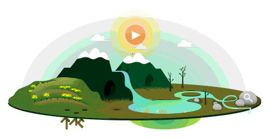

Otro de los tipos de ambiente que componen al medio, es el ambiente artificial. Y dentro de este están los diques, que son formados por la intervención del hombre,
estos se crean acumulando al borde del mar para evitar que el agua se escape.
Los invernaderos también forman parte de este tipo de ambiente y se trata de lugares de cultivo. Estos lugares son diseñados para condicionar factores como humedad
y temperatura en espacios cerrados con vidrio o plástico.
Finalmente están los acuarios, lugares construidos por el hombre para criar diversas especies acuáticas.
Son los que se mantienen gracias al control humano, tienen elementos elaborados por el hombre (edificios, maquinas, casas, carreteras, etc.), así como la presencia de
seres vivos (hombre, animales y plantas). Ejemplos: cultivos, presas, potreros, pueblos y ciudades.

CARACTERÍSTICAS DE LOS ECOSISTEMAS ARTIFICIALES:
DEBE DOTARSE DE UNA FUENTE DE ENERGÍA, EN LA MAYOR PARTE DE LAS OCASIONES DE FORMA ARTIFICIAL.
LA DIVERSIDAD DE ESPECIES ES BAJA. SUS CADENAS ALIMENTARIAS SON SIMPLES Y EN LA MAYOR PARTE DE LAS OCASIONES INCOMPLETAS.
QUÉ ES EL MEDIO AMBIENTE ARTIFICIAL EJEMPLOS:
UN INVERNADERO, UN DIQUE Y UNA PECERA, POR EJEMPLO, SON EJEMPLOS DE ECOSISTEMAS ARTIFICIALES.
LA ACEPTACIÓN MÁS AMPLIA DEL CONCEPTO DE ECOSISTEMA ARTIFICIAL INCLUYE A LOS ASENTAMIENTOS URBANOS COMO LAS CIUDADES, PESE A QUE ÉSTOS
PRESENTAN VARIAS DIFERENCIAS CON LOS ECOSISTEMAS NATURALES.
QUÉ ES UN ECOSISTEMA ARTIFICIAL Y NATURAL:
MIENTRAS QUE LOS ECOSISTEMAS NATURALES SON AQUELLOS EN LOS QUE EL SER HUMANO NO INTERVIENE PARA SU FORMACIÓN Y DESARROLLO,
EN LOS ECOSISTEMAS ARTIFICIALES, QUE NO EXISTÍAN PREVIAMENTE, EL SER HUMANO INFLUYE Y/O CONTROLA SU FORMACIÓN Y DESARROLLO.